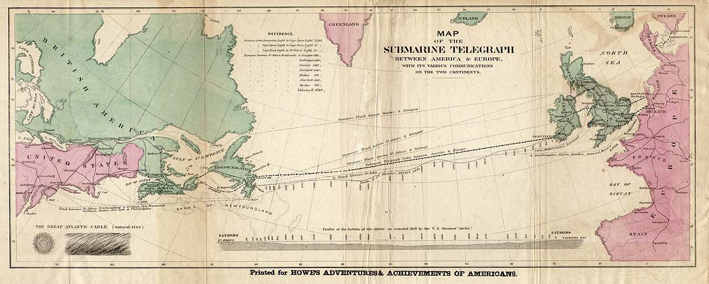
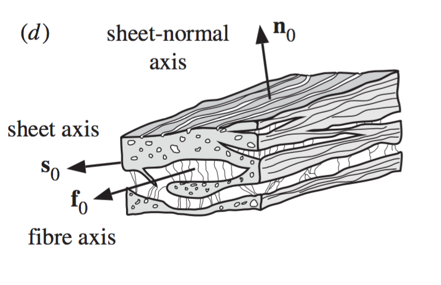

The cable equation A.K.A. the monodomain model
Joakim Sundnes
Jun 15, 2016
Overview
- Introduction
- History
- Brief overview of neurons
- Derivation of the cable equation
- Scaling/dimensionless form
- Example models
- Gap junctions and cardiac conduction
History lesson

Neurons

Why is the cable equation important?
- Fundamental for modeling neurons
- Signal propagation in Purkinje network
- Extends to cardiac conduction in 3D (bidomain, monodomain)
Electric flow in neurons
The neuron consists of three parts:
- Dendrite-tree, the "input stage" of the neuron, converges on the soma.
- Soma, the cell body, contain the "normal" cellular functions
- Axon, the output of the neuron, may be branched. Synapses at the ends are connected to neighboring dendrites.
The axon has an excitable membrane, gives rise to active conduction.
Will first look at conduction in the dentrites, passive conduction.
The cable equation (Chap 4.1)
The cell typically has a potential gradient along
its length. Radial components will be ignored.
Notation:
- \( V_i \) and \( V_e \) are intra- and extra cellular potential
- \( I_i \) and \( I_e \) are intra- and extra cellular (axial) current
- \( r_i \) and \( r_e \) are intra- and extra cellular resistance per unit length
$$
\begin{equation*} r_i = \frac{R_c}{A_i}, \end{equation*}
$$
where \( R_c \) is the cytoplasmic resistivity and \( A_{i} \) is the cross sectional area of the cable.
Sketch of a discrete cable

Curents are assumed to be Ohmic
Current flowing from one point to the next is proportional to the voltage difference between the points:
$$
\begin{equation*}V_i(x+\Delta x) - V_i(x) = - I_i(x) r_i \Delta x \end{equation*}
$$
$$
\begin{equation*}V_e(x+\Delta x) - V_e(x) = - I_e(x) r_e \Delta x \end{equation*}
$$
In the limit we have:
$$
\begin{equation*}
I_i = - \frac{1}{r_i} \frac{\partial V_i}{\partial x}
\mbox{ and }
I_e = - \frac{1}{r_e} \frac{\partial V_e}{\partial x}
\end{equation*}
$$
Conservation of current (1)
Any current leaving the intracellular domain has to enter the extracellular domain, and vice-versa. Total
current is conserved between \( x \) and \( x+\Delta x \):
$$
I_i(x) - I_i(x+\Delta x) = -(I_e(x) - I_e(x+\Delta x)) = I_t \Delta x,
$$
where \( I_t \) is transmembrane current, per unit length.
Again, taking the limit \( \Delta x \longrightarrow 0 \) yields:
$$
\begin{equation*} I_t = - \frac{\partial I_i}{\partial x} = \frac{\partial I_e}{\partial x} \end{equation*}
$$
Conservation of current (2)
We now have the membrane current \( I_t \) expressed in terms of \( I_i, I_e \). We want a relation between
the \( I_t \) and the membrane potential \( V \).
$$ \frac{1}{r_e} \frac{\partial^2 V_e}{\partial x^2} = - \frac{1}{r_i} \frac{\partial^2 V_i}{\partial x^2} = - \frac{1}{r_i} ( \frac{\partial^2 V}{\partial x^2}+ \frac{\partial^2 V_e}{\partial x^2})
$$
$$
\begin{equation*} (\frac{1}{r_e}+ \frac{1}{r_i}) \frac{\partial^2 V_e}{\partial x^2} = - \frac{1}{r_i} \frac{\partial^2 V}{\partial x^2} \end{equation*}
$$
Conservation of current (3)
$$ (\frac{1}{r_e}+ \frac{1}{r_i}) \frac{\partial^2 V_e}{\partial x^2} = - \frac{1}{r_i} \frac{\partial^2 V}{\partial x^2} $$
$$
\begin{equation*}
\frac{\partial^2 V_e}{\partial x^2} = - \frac{ \frac{1}{r_i} }{\frac{1}{r_e}+ \frac{1}{r_i}} \frac{\partial^2 V}{\partial x^2} =-\frac{r_e}{r_e+r_i}\frac{\partial^2 V}{\partial x^2}
\end{equation*}
$$
so
$$
\begin{equation*}
I_t = \frac{\partial I_e}{\partial x} = - \frac{1}{r_e} \frac{\partial^2 V_e}{\partial x^2}= \frac{1}{r_e+r_i}\frac{\partial^2 V}{\partial x^2}
\end{equation*}
$$
Incorporating cell membrane physiology
From the membrane model previously derived we have
$$
I_t = p(C_m\frac{\partial V}{\partial t}+I_{ion})
$$
where \( p \) is the circumference of the cable. The total
expression will be in Ampere/meter.
The total 1D cable model is then:
$$
\begin{equation*} p(C_m\frac{\partial V}{\partial t} +I_{ion}(V))= (\frac{1}{r_e+r_i} \frac{\partial^2 V}{\partial x^2})
\end{equation*}
$$
Physical units
So far we have disregarded physical units in the equation. Typical units are
| Quantity | Dimension | Typical unit |
|---|
| \( p \) | length | cm |
| \( C_m \) | capac./area | \( \mu \) F/cm \( ^2 \) |
| \( V \) | voltage | mV |
| \( I_{ion} \) | current/area | \( \mu \) A/cm \( ^2 \) |
| \( r_i,r_e \) | res./length | 10 \( ^3\Omega \) cm |
| \( x \) | length | cm |
| \( t \) | time | ms |
Exercise
Verify that all terms in the cable equation have the same physical units:
$$
\begin{equation*} p(C_m\frac{\partial V}{\partial t} +I_{ion}(V))= (\frac{1}{r_e+r_i} \frac{\partial^2 V}{\partial x^2})
\end{equation*}
$$
| Quantity | Dimension | Typical unit |
|---|
| \( p \) | length | cm |
| \( C_m \) | capac./area | \( \mu \) F/cm \( ^2 \) |
| \( V \) | voltage | mV |
| \( I_{ion} \) | current/area | \( \mu \) A/cm \( ^2 \) |
| \( r_i,r_e \) | res./length | 10 \( ^3\Omega \) cm |
| \( x \) | length | cm |
| \( t \) | time | ms |
Scaling the cable equation (1)
We can scale the variables to reduce the number of parameters.
Define a membrane resistance:
$$
\begin{equation*} \frac{1}{R_m} = \frac{\Delta I_{ion}}{\Delta V}(V_0) \end{equation*}
$$
where \( V_0 \) is the resting potential. Multiplication with \( R_m \)
$$
\begin{equation*} C_m R_m \frac{\partial V}{\partial t} + R_m I_{ion}=
\frac{R_m}{p(r_i+r_e)}\frac{\partial^2 V}{\partial x^2} \end{equation*}
$$
Here we have assumed \( r_i \) and \( r_e \) constant.
Defining \( f=-R_m I_{ion} \), \( \tau_m=C_m R_m \) (time constant)
and \( \lambda_m^2 = R_m/(p(r_i+r_e)) \) (space constant squared)
we can write
$$
\begin{equation}
\tau_m \frac{\partial V}{\partial t} - f=\lambda_m^2 \frac{\partial^2 V}{\partial x^2} \label{that}
\end{equation}
$$
Scaling the cable equation (2)
Introduce the dimensionless variables:
$$
\begin{equation*} T = t/\tau_m \mbox{ and } X = x/\lambda_m \end{equation*}
$$
We can then write:
$$
\begin{equation}
\frac{\partial V}{\partial T} = f + \frac{\partial^2 V}{\partial X^2}
\label{this} \end{equation}
$$
A solution \( \hat{V}(T,X) \) of \eqref{this} will imply that
\( V(t,x) = \hat{V}(t/\tau_m,x/\lambda_m) \) will satisfy \eqref{that}.
The scaled equation has units of voltage, but can easily be non-dimensjonalized by introducing
\( V=V_0+ \bar{V}\tilde{V} \), where \( \bar{V} \) is a characteristic voltage and
\( \tilde{V} \) is a dimensionless variable.
The reaction term (Chapter 4.2,6.2,6.3)
The form of \( f \) depends on the cell type we want to study.
For the axon \( I_{ion}(m,n,h,V) \) of the HH-model is
a good candidate.
For the dendrite, which is non-excitable, a linear resistance
model is good. Shift \( V \) so \( V=0 \) is the resting potential:
$$
\begin{equation*} \frac{\partial V}{\partial T} = \frac{\partial^2 V}{\partial X^2} - V \end{equation*}
$$
We need boundary and initial values. Initially at rest:
$$
\begin{equation*} V(X,0) = 0 \end{equation*}
$$
Boundary conditions
Types of boundary conditions:
- Dirichlet: \( V(x_b,T) = V_b \), voltage clamp.
- Neumann: \( \frac{\partial V}{\partial x} = -r_i I_i \) (or \( \frac{\partial V}{\partial X} = -r_i \lambda_m I_i \)), current injection.
Justification:
$$
\begin{equation*}\frac{\partial V_i}{\partial x}= -r_i I_i \Rightarrow
\frac{\partial V }{\partial x} - \frac{\partial V_e}{\partial x} = -r_i I_i
\stackrel{r_e=0}{\Longrightarrow} \frac{\partial V }{\partial x}= -r_i I_i \end{equation*}
$$
Passive condition (1)
The linear cable in dimensionless form:
$$
\begin{equation*} \frac{\partial V}{\partial T} = \frac{\partial^2 V}{\partial X^2} - V \end{equation*}
$$
Set \( V(0) \) = 0
We consider a semi-infinite (i.e. long) cable with voltage clamped to \( V_{c} \) at \( X=0 \). We have
the equation
$$
\begin{equation*}
\frac{\partial^2 V}{\partial X^2} = V \end{equation*}
$$
with solution
$$
\begin{equation*} V = V_c e^{-X} = V_c e^{-x/\lambda_m}
\end{equation*}
$$
Passive conduction (2)
We can compute the space constant for the passive case
$$
\lambda_m = \sqrt{R_m/(p(r_i+r_e))} \approx \sqrt{R_m/(p r_i)}
= \sqrt{R_m/(p R_c/A)},
$$
where we recall that \( R_c, A_i \) are sytosolic resistance and cross sectional area.
If the cross section is circular with diameter \( d \), we have
$$
\lambda_m =\sqrt{R_m/(p R_c/A)} = \sqrt{R_m(\pi d R_c/(\pi(d/2)^2))} =
\sqrt{\frac{R_m d}{4R_c}}
$$
Typical values for a mammalian neuron;
$ R_m = 7000 \Omega $ cm \( ^{2}, R_c = 150 \Omega \) cm, \( d=10.0\mu \) m, gives
\( \lambda_m \approx 1.0 \) mm. A human axon can be up to a meter long.
The bistable equation (Chapter 6.2.1) (1)
The simplest model of active conduction in neuron is obtained by choosing
the reaction term
$$
f(V) = AV(1-V)(V-\alpha),
$$
where \( \alpha \) is a parameter between 0 and 1, and \( A \) is a scaling parameter
for the reaction term.
The bistable equation (2)
We have
$$
\frac{\partial V}{\partial t} = \frac{\partial^2 V}{\partial x^2}+ AV(1-V)(V-\alpha),
$$
and if we neglect the diffusion term we get
$$
\frac{\partial V}{\partial t} = AV(1-V)(V-\alpha),
$$
The right hand side has three zero's; \( V=0, V=1, V=\alpha \). These are equilibrium points for
the equation (\( \partial V/\partial t = 0 \)).
The bistable equation (3)

Here \( \alpha = 0.5 \).What happens if the solution is perturbed away from the three equilibrium
points \( V=0, V=1, V=\alpha \)? (Recall that \( dV/dt = f(V) \))
The bistable equation (4)
- The equation has one unstable and two unstable equilibrium points
- Any initial condition \( V < \alpha \) will approach \( V=0 \)
- Any initial condition \( V > \alpha \) will approach \( V=1 \)
- In 1D (with diffusion), the solution is a traveling front (demo)
The FitzHugh-Nagumo model (1)
- The bistable equation describes a traveling front, but never returns to the resting potential
- To describe a propagating action potential we need to add a recovery variable
- The result is the Fitzhugh-Nagumo (FHN) model, the simplest model for qualitatively realistic propagation in excitable cells
$$
\begin{align}
\frac{\partial V}{\partial t} &= \frac{\partial^2 V}{\partial x^2} + f(V)-w \nonumber \\
\frac{\partial w}{\partial t} &= \epsilon (V-\gamma w), \nonumber
\end{align}
$$
with \( \epsilon,\gamma > 0 \), and \( w(0) =0 \).
The FitzHugh-Nagumo model (2)
Again, we can examine the behavior of the model by neglecting diffusion:
$$
\begin{align}
\frac{\partial V}{\partial t} &= f(V)-w \nonumber \\
\frac{\partial w}{\partial t} &= \epsilon (V-\gamma w). \nonumber
\end{align}
$$
- Initially, the model behaves as the bistable equation
- As \( V \) increases, \( \frac{\partial w}{\partial t}> 0 \)
- \( w>0 \) will "pull" \( V \) back towards \( V=0 \)
- In 1D, the solution is a traveling wave resembling an action potential (demo)
Conduction in cardiac tissue (1)
- Neurons are long, cardiac muscle cells are only about 0.1mm
- How is the electrical signal conducted in cardiac tissue?
- Can cardiac conduction be described using similar models as the cable equation?
Conduction in cardiac tissue (2)
- Cardiac myocytes are connected end-to-end, and form fiber-like tissue structure
- The structure has important implications both for mechanical and electrical properties of the tissue
- Electrical conduction between cells is mediated by gap junctions

Gap junctions

- Gap junctions are located between cells, and ions may pass through them.
- The junctions have a high resistance to flow compared to the intra cellular environment
Effective conductivity (1)
Consider a 1D line of cell and
assume that Fick's law holds in the interior:
$$ J = - D \frac{dc}{dx} $$
Between cells we must have continuity of flow:
$$ -D\frac{dc(x^-_b)}{dx} = -D\frac{dc(x^+_b)}{dx} $$
Here \( x^-_b \) and \( x^+_b \) indicates that the function
is evaluated in the limit from left and right, respectively.
Furthermore we assume this flow to be proportional to the fall:
$$ J = F[c(x^-_b)-c(x^+_b)] $$
where \( F \) is a permeability constant.
Effective conductivity (2)
We would like to relate \( F \) and \( D \) into an average, large scale,
effective diffusion coefficient. Consider \( N \) cells of
length \( L \):
$$ J = -D_e \frac{\Delta c}{\Delta x} = -D_e \frac{c_1-c_0}{NL} $$
- Steady flux with fixed gradient.
- At steady state \( J \) is constant, so from \( J = - D (dc/dx) \) we have that \( c \) is linear in the interior. The solution \( c \) will be piecewise linear with jump at the cell boundaries.
- Continuity of flow over the gaps gives \( dc/dx = -\lambda \) for all interfaces.
- For the same reason the steps must all be equal, \( c(x^-_b)-c(x^+_b)=\Delta \).
Effective conductivity (3)
The size of \( \Delta \) and \( \lambda \) must fit the drop \( (c_0-c_1) \):
- \( N \) intervals of length L: \( NL\lambda \)
- \( N \) jumps of size \( \Delta \): \( N\Delta \)
So in total we must have:
$$ NL\lambda + N\Delta = c_0-c_1 $$
From the definition of \( F \) we have \( D\lambda = F\Delta \).
In steady state the flux is the same on every scale:
$$
\begin{align*}
J &= D\lambda = \frac{D_e}{NL}(c_0-c_1) = \frac{D_e}{NL}(NL\lambda + N\Delta) \\
&= \frac{D_e}{NL}(NL\lambda +N\frac{D\lambda}{F}) = D_e \lambda(1+\frac{D}{FL})
\end{align*}
$$
So
$$
D = D_e (1+\frac{D}{FL}) \Rightarrow \frac{1}{D_e}=\frac{1}{D}+\frac{1}{FL}
$$
Summary
- The cable equation describes electrical signals in leaky cables
- 1D reaction-diffusion equation, the form of the reaction term depends on the properties of the membrane:
- Linear; passive membrane
- Cubic; bistable equation (propagating front)
- Fitzhugh-Nagumo; coupled to ODE (propagating AP)
- Cardiac tissue can be modeled with a similar approach because of gap junctions
- Monodomain and bidomain models of cardiac conduction; 3D extensions of cable equation